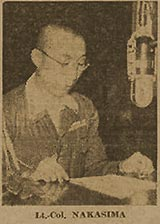

|
j
a v a s c r i p t |
October 18, 1942

Lt.Col.Yoshio Nakashima
Chief Information Bureau The Tribune printed two speeches of Lt. Col. Yoshio Nakashima, Katsuya's successor. He said he's impressed and highly satisfied at the "general and spontaneous support." Hitoshi Kozuma's interest is different, as indicated by his earlier articles on the City Bus girls and nurses. Today's article is on female radio announcers: "Indeed their voice is enchanting.... It so happens, moreover, that these girls are as comely as their voice is sweet." Harder to take was Ignacio Javier's first radio broadcast — a masterpiece of treason and dishonor. A Japanese official on the verge of closing a million-peso deal for machinery was asked to pay in cash. "I will get the cash," he answered, "but later." "I won't accept installment payments; it must be cash," said the vendor, misunderstanding. "Yes, yes," answered the Japanese, "but give me a little time. Our machine can't print [money] that fast." |
|
|
|
|